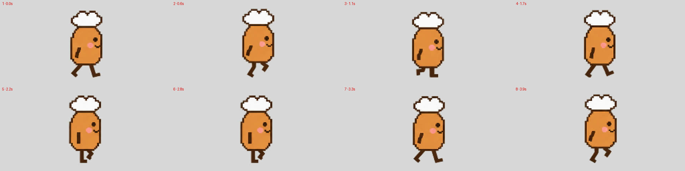

aldegad/sprite-gen
Animation test, 2026-11-18 · Game sprites & pixel art · driven by Claude Code (Claude Opus 5.5) in a throwaway sandbox
The brief: Pixel-art sprite sheets of the bread mascot: an 8-frame walk to the right and a 4-frame idle, 128 px frames, transparent, the same character in every frame. Full brief →
What was checked
- ✓ pixel art
- ✓ the mascot
- ✓ walk cycle
- ✓ walks to the right
- ✓ idle breathes
- ✓ same in every frame
- ✓ same ground line
- ✓ sheet sizes and transparency
Checked by hand on the full recording: The idle body rises and settles across its 4 frames.
The recording: 1024 x 512, 30.0 fps, 4.0 s. Judge (gpt-6-astra, 8 frames): follows the brief 3/5, looks 4/5.
Time 6.2 min (installing the tool included) · 35 turns · $0.84 at API prices · files: idle.png, preview.mp4, walk.png
The 8 frames the judge saw

The agent's last words
ction failed. I re-prepared the run with that step off and nearest-neighbour scaling, using the tool's own options. Extraction and atlas building then passed. The pixel-art look comes from the drawings themselves, not from the snapping step. Because of that, edges in the 4× preview aren't perfectly crisp. - **Background colour:** the model drew the rows on white rather than the flat cyan the tool asked for. The extractor still separated the figures cleanly, white hat included. DELIVERABLE: /home/runner/work/output/walk.png,/home/runner/work/output/idle.png,/home/runner/work/output/preview.mp4